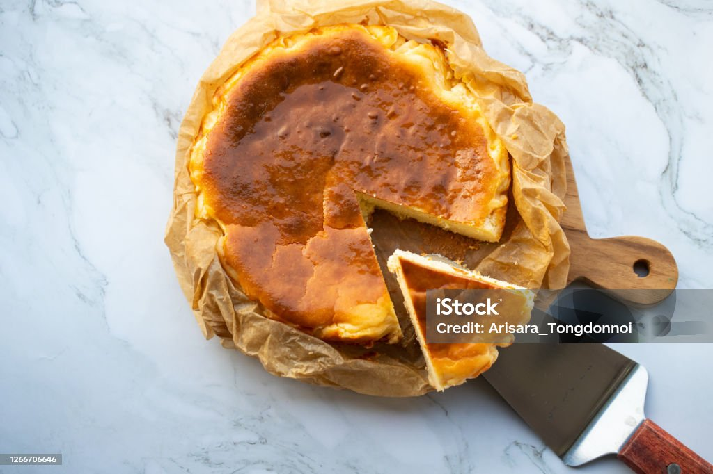
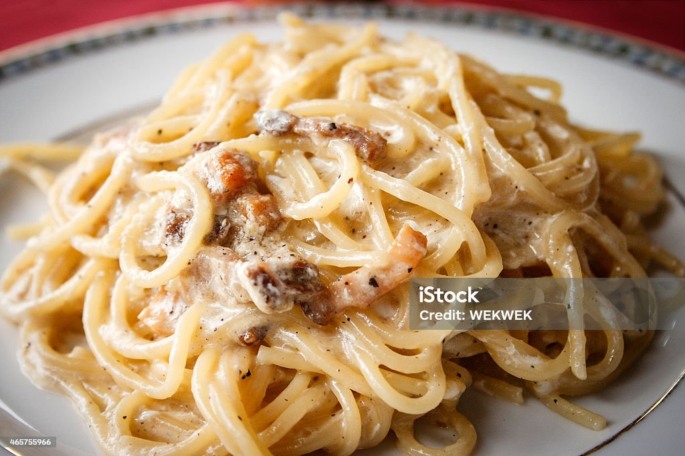
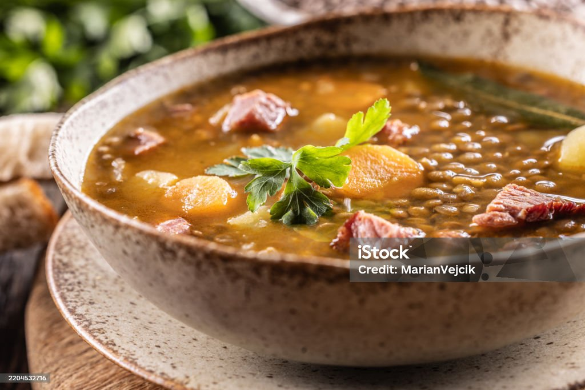
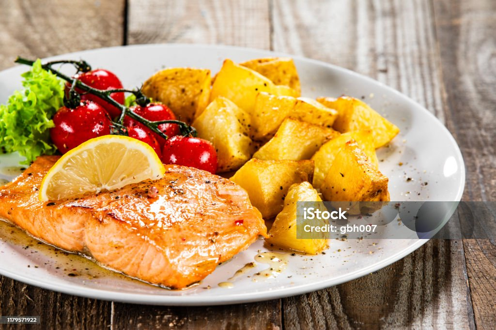

Tartar de Queso Cremosa
Atrévete a cocinar esta tarta de facil elaboración pero de gran calidad.
- Tiempo: 30 min
- Dificultad: 2 / 5

Atrévete a cocinar esta tarta de facil elaboración pero de gran calidad.

Tradicional pasta al estilo carbonara.

Las autenticas lentejas que te preparaba tu abuela.

Del mar a tu plato con patatas.
Hola, soy Mateo Gómez, cocinero aficionado, eterno apasionado de la gastronomía tradicional y, sobre todo, un firme defensor de que comer bien no requiere pasar cinco horas en la cocina ni ingredientes imposibles. Empecé este blog como un recetario personal para guardar los platos que aprendí de mis abuelos, pero se ha convertido en mi excusa favorita para compartir trucos caseros, rescatar sabores de toda la vida y demostrar que cualquiera puede preparar un plato increíble con un poco de cariño y los ingredientes correctos.
¡Séntate a la mesa y disfruta!
Si quieres compartir alguna receta en este blog picha aquí.
Preguntas a mi: Correo.